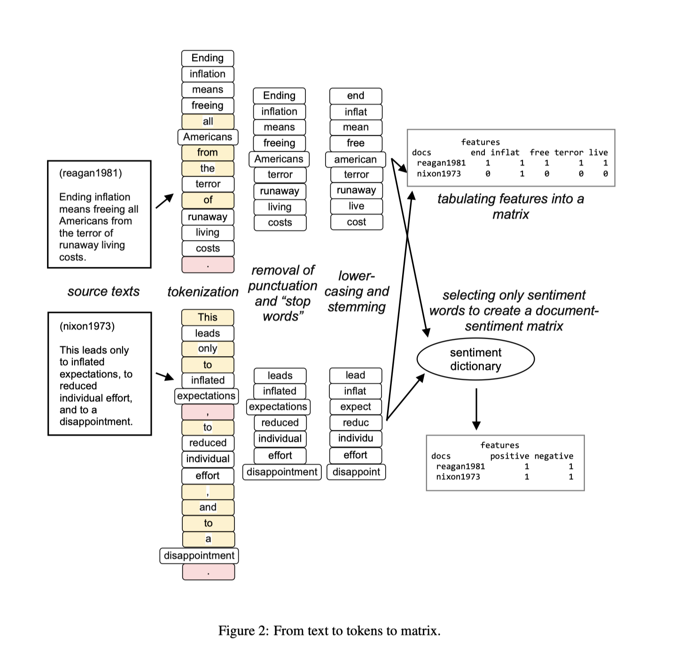
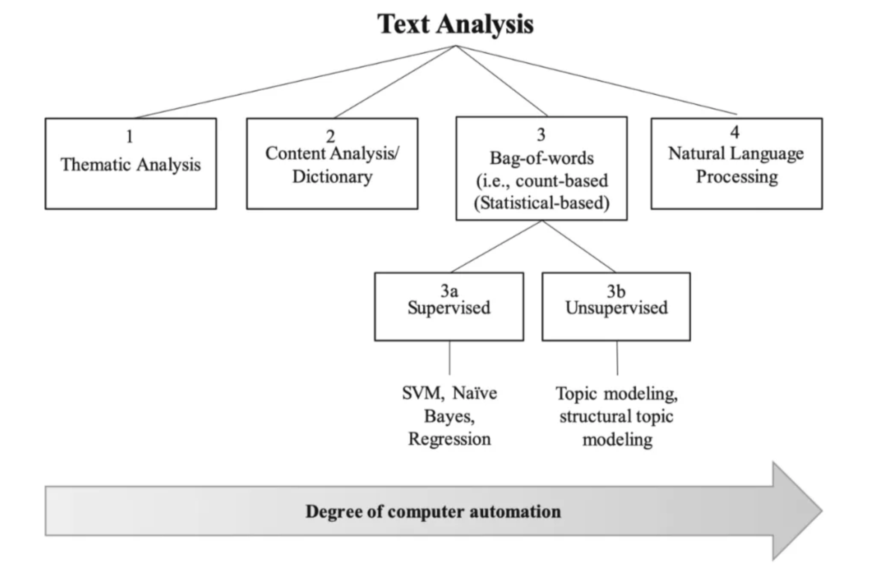
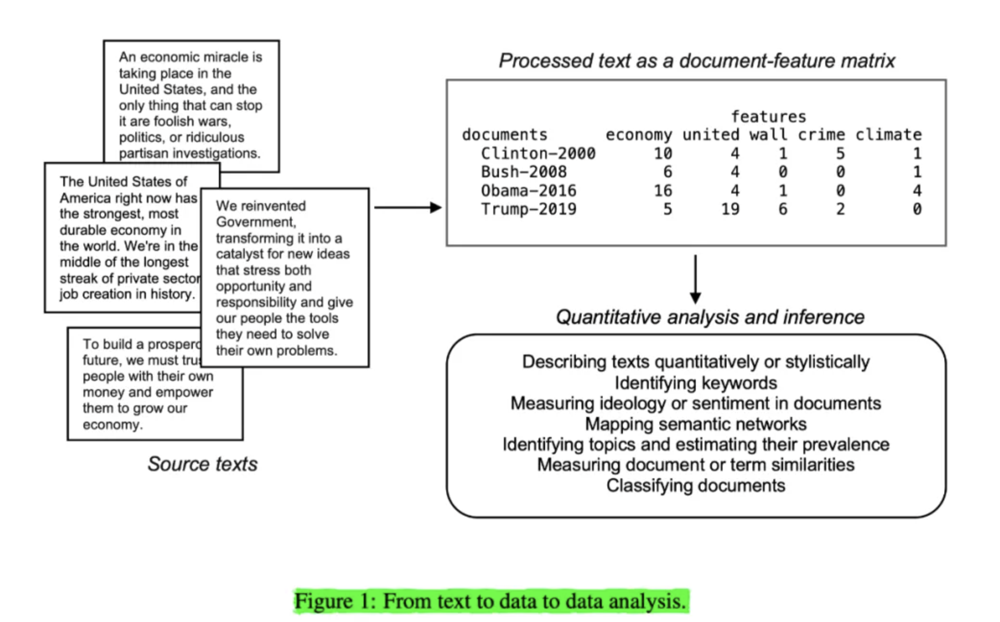

一、文本的作用
文本涉及两个主体，即文本生产者和文本消费者：
- 文本生产者: 生成文本的主体；传递生产者想表达的内容，可能也会潜在蕴含着生产者的一些特质属性
- 文本消费者: 阅读文本的主体；消费者阅读这段文本时，文本又对消费者认知活动产生影响。
在大数据的今天，通过互联网超文本链接，无数的个人、团体、公司、政府等不同组织形态的主体均深深嵌入到互联网世界，在网络世界中留下了大量的文本。社会、管理、经济、营销、金融等不同学科，均可以研究网络上海量的文本，扩宽的研究对象和研究领域。下面大部分内容是从政治学和经管领域的两份文档翻译来，我觉得讲的挺明白的，其中加入了我的一些理解和扩充。
二、 理解文本
- text as text 原始的文本，定性的文本
- textual data(text as data) 量化后的文本数据，可定量
2.1 text as text
text as text 原始的文本，定性的文本
文本的重点是传递着某种东西，从某种意义上说，所有形式的文本都包含可以被视为数据形式的信息。因此，文本总是以某种方式提供信息（即使我们不了解如何操作）。但是，言语活动的主要目标不是记录信息，而是进行交流：传达思想，指令，查询等。我们可以记录下来并将其视为数据，但是将我们的想法或思想表达为单词和句子的目的主要是交流，而不是将我们的想法或思想记录为数据形式。大多数数据是这样的：它表征的活动与数据本身完全不同。
例如，在经济学中，可能是我们想要刻画的经济交易（使用价值媒介交换商品或服务），而数据是以某种聚合形式对这些交易进行抽象，这有助于我们理解交易的意义。通过就抽象的相关特征达成共识，我们可以记录并分析人类活动，例如制造业，服务业或农业。从通信行为中提取文本数据特征的过程遵循相同的过程，但有一个主要区别：由于原始文本可以直接通过记录的语言与我们交谈，因此文本首先不需要进行处理或抽象化待分析。但是，我在这里的论点是，特征抽象的过程是将文本视为数据而不是直接将其视为文本的方法的独特之处。
具有讽刺意味的是，只有当我们破坏了直接理解文本的能力时，才有可能利用文本的数据获取洞察力。为了使它作为数据有用，我们必须消除原始文本的结构，将文本转换为结构化的表格数据。定量分析是理解非语言数据的起点；另一方面，非结构的文本变成丑陋表格数据的过程，出于统计分析或机器学习目的，我们经常质疑这一过程丢失了什么信息。
机器是愚蠢的，但是将文本视为数据意味着让愚蠢的机器处理并可能分析我们的文本。关键是，为了将文本作为数据 而不是文本仅仅是文本，我们必须破坏原始文本的直接可解释性，但目的是从其样式化特征中进行更系统，更大规模的推断。我们应该坚定不移地认识到这一过程，但也不要因此而寝食不安，因为将文本作为数据进行分析的重点永远不是解释数据而是挖掘其深层次的模式。数据挖掘是一个破坏性的过程-正如采挖矿山资源-为了开采其宝贵资源，开发过程不可避免会破坏地表形态和环境。
2.2 Latent versus manifest characteristics from textual data
textual data(text as data) 量化后的文本数据，可定量的数据。所以小标题我翻译为“量化后的文本数据隐藏的信息vs直观可见的信息”，
在政治学领域，我们通常最感兴趣的不是文本本身，而是文本透漏给我们有关作者的一些隐藏特性。在政治（以及心理学）研究中，我们有关政治和社会行为者的一些重要理论，很多时候直接观察行为活动很难观察到其内在的品质。
例如，意识形态是研究政治竞争和政治偏好的基础，但是我们没有直接的衡量工具来记录个人或政党有关“社会和道德自由政策与保守政策”的相对偏好。其他偏好，包括支持或反对特定政策，如1846年废除了英国的《玉米法》（Schonhardt-Bailey，2003年）；在关于《莱肯公约》的辩论中支持或反对进一步的欧洲一体化（Benoit等，2005）；再比如支持或反对不信任运动（Laver和Benoit，2002年）。
这些偏好是作为政治行为者的内部状态而存在的，无论这些行为者是立法者，政党，代表还是候选人，都无法直接观察。非言语行为指标也可用于推断这些信息，但事实表明，政治行为者所说的话比其他行为形式更为真诚。
因此，文本数据（Textual data）可能包含有关取向和信念的重要信息，对于这些取向和信念，非语言形式的行为可能会充当不良指标。长期以来，心理学领域也一直将言语行为作为可观察到的潜在兴趣状态的暗示，例如人格特质（例如Tausczik和Pennebaker，2010年）。缺少增强的询问技术或头脑阅读技术来识别政治和社会行为者的偏好，信念，意图，偏见或个性，下一个最佳选择是根据其说话或书写的内容来收集和分析数据。关注的对象不是文本包含的内容，而是其内容作为有关潜在特征的数据所揭示的内容，这些潜在特征为其提供了可观察的含义。最后一句话比较难理解，可以理解为万事万物有联系，通过联系思维来挖掘文本中的信息。
文本数据(Textual data)还可能具有较为明显的特征，例如，政治传播的许多领域都与文本所指出的潜在特征无关，而与文本本身所包含的传播形式和性质有关。举一个经典的例子，在一个著名的政治局委员对斯大林诞辰70周年之际的文章的研究中，莱特斯，伯努特和加索夫（1951）能够衡量各团体在共产主义意识形态方面的差异。在这一政治事件中，这些信息不仅预示了潜在的方向，而且还预示了在可预见的斯大林死后事件中有关领导权斗争的某种政治动作。这些信息本身是重要的，这些信息只能从每个政治局委员撰写的公开文章中搜集而来，它们必须充分了解将在党和苏联苏维埃新闻，并由其他政权参与者解释为信号。再举一个例子，如果我们对一个政治演说家是使用民粹主义还是种族主义语言感兴趣，那么该语言将直接以民粹主义或种族主义术语或参考形式出现在文本中，而要紧的是它们是否被使用。与其说这些术语代表什么，不如说是什么。例如Jagers和Walgrave（2007）在研究比利时政党的政党政治广播时，发现极右翼政党Vlaams Blok所使用的民粹词语远比其他比利时政党丰富的多。
在实践中，从文本可观察到的明显特征与潜在特征之间的特征的有时候这两个概念区分的并不明显。举例来说，文体风格可以用一些明显的特征词对文本进行量化，体现出作者的一些写作偏好。例如，在使用适用于政治文本的可读性度量改编的研究中，我们可能会对政治成熟度的潜在水平感兴趣，这可以用来衡量说话者的意图或说话者的特征，这一点从观察到的文本样本中可以看出。或者，我们可能会对它们在可读性上的明显差异感兴趣，这是传播媒介更直接指标。例如，在对英国议会历史演讲的研究中，Spirling（2016）将19世纪末期向简单语言的转变归因于广播扩展特许经营的民主化效应。Benoit，Munger和Spirling（2019）使用类似的措施，比较了同一位总统当天在同一天发表的美国总统国情咨文演讲的样本，但其口头和书面形式均表明口头形式使用的语言较为简单。前一项研究可能对语言的易用性感兴趣，该语言的易用性是政治代表制更潜在的特征的指标，而后一项分析可能更侧重于交付媒介的明显后果。对于许多使用文本数据的研究设计而言，区别更多是研究目标的问题，而不是结构化和分析文本数据的某些内在方式。
2.3 文本分析的步骤

完整的文本分析步骤包括:
- 读取数据
- 分词(中文必须有这一步，由于英文是空格间隔的语言，英文有时候不需要分词）
- 剔除符号和无意义的停止词
- 字母变小写，词干化
- 使用一定的编码方式构建文档词频矩阵
| 序号 | 步骤 | 解释 | 中文 | 英文 |
|---|---|---|---|---|
| 1 | 读取数据 | 数据一般存储于不同的文件夹不同文件内，需要将其导入到计算机 | ||
| 2 | 分词 | 导入到计算的文本是字符串数据，需要整理为更好用的列表 | 例如“我爱你中国”分词后 得到[“我”, “爱”, “你”, “中国”] |
“I love China"分为 [“I”, “love”, “China”] |
| 3 | 剔除符号和无意义的停止词 | 为了降低计算机运行时间，对分析结果影响较小的字符，诸如符号和无意义的词语需要剔除掉 | 如“的”，“她”， ”呢”， “了” | “is” , “a”, “the” |
| 4 | 字母变小写，词干化 | 同义词归并，同主体词归并 | “中铁”，“中国铁建”，“中铁集团”都可以归并为“中铁” | 先变为小写，这样“I”和“i”都归并为“i”； “was”，“are”，“is”都归并为“be” |
| 5 | 构建文档词频矩阵 | 使用一定的编码方式，即用某种方式表示文本。常见的有词袋法、tf-idf； 可以使用scikit-learn构建文档词频矩阵，但中英文略有区别，需要注意 |
“我爱你中国”需要先整理为“我 爱 你 中国” | “I love China” |
三、常见的文本分析技术有
- 主题分析(Thematic analysis)
- 内容分析(content analysis)
- 基于词典的方法(dictionary analysis)
- 文本向量化(Bag-of-words)
- 监督学习如SVM、Bayes和Regression
- 无监督学习，如LDA话题模型
- 自然语言处理
上述文本分析技术，按照人与机器参与程度，绘制在下图。一般来说，越向右，文本分析技术的自动化程度越高，需要注意的是自动化越高，并不代表人的工作量就越少。

3.1 主题分析Thematic Analysis
主题分析(Thematic analysis)是一种专家方法，一般与扎根理论方法相结合(Baumer, Mimno, Guha, Quan, & Gay, 2017)。扎根理论与主题分析的理念是基于专家自身经验和对世界的理解，做出对数据的见解，从而构建新理论。主题分析常见于组织科学和传播学(Gioia, Corley, & Hamilton, 2013; Strauss & Corbin, 1998)。
主题分析涉及一个反复迭代的过程，在此过程中，研究人员将开发出一系列源自文本的代码和类别。除非要精炼理论，否则一般在分析开始之前尚不知道类别。在这种情况下，数据分析需要对文献和数据进行不断的比较。
- 研究人员从参与者自己的语言开始（称为“一阶编码”或“开放式编码”；Gioia等人，2013；Strauss＆Corbin，1998）
- 然后将相似的代码归为一类（称为“二阶代码”或“主轴编码”；Strauss＆Corbin，1998）。
诸如NVivo和ATLAS.ti之类的计算机软件可以帮助简化上述过程，但文本的分类通常依赖于人类编码衍生的类别的操作定义，计算机自动化的程度依旧很低，分析的数据量通常不大。而且编码过程对编码者的要求严格，通常是对该领域有较深理解的人才适合做此类工作。
3.2 内容分析/基于词典的方法法
内容分析 和 其他基于字典的方法 通常是通过对特定文本中 单词/词组 的频率计数进行的（Reinard，2008；Short，Broberg，Cogliser＆Brigham，2010）。因为按照这种方法，文本数据被压缩成词组频数，定性的文本数据转化为定量的频数，索引可用于回答更多以定量为导向的研究问题（McKenny等，2016；Reinard，2008）。
比如进行文本情感分析，我们可以用很简单的思路。即统计文本中正面词出现的总数和负面词出现的总数，得出文本的情感值。而在此分析过程中，我们需要事先拥有一个正面词词典和负面词词典。
是否有成熟的领域词典、或者构建领域词典，这需要研究者对研究问题和研究的数据有一定的领域知识，工作量也会因是否有词典而不同。一般有现成的成熟的词典，计算机自动化程度高，人工工作量低。
与主题分析类似，计算机软件可以协助内容分析过程。像DICTION这样的程序会使用 分类字典 自动对文本评分（即，根据单词或n-gram而非操作定义确定主题）。可以与主题分析类似地使用其他程序，例如NVivo或ATLAS.ti，在主题分析中，通过软件的帮助手动进行编码和分类，以组织数据。
3.3 词袋法Bag-of-words

文本数据是非结构化的定性数据，计算机并不能直接使用。我们需要按照计算机容易理解的方式去组织数据，类似于上图的第一步骤,四段英文文本被组织成一个文档特征矩阵（document-feature-matrix），矩阵中
- 每一行代表一个英文文档
- 每一个列代表一个特征词
3.3.1 词袋法 vs 主题分析中的编码者
为了理解词袋法，可以类比主题分析 中的编码者。我们可以将词袋法看做是一个死板的，不知变通的人，脑子很简单，只知道统计特征词在每个文档中出现的词频。那么据此我们就知道词袋法和人的优缺点。
对于词袋法，优点是规则标准统一，缺点是不知变通，牺牲了文本中很多的信息量。强调编码过程的高标准，牺牲了分析的深度。
对于研究者参与 主题分析 这样的编码过程，优点是研究者有很强的领域知识和强大的洞察力，可以灵活洞察规律，缺点是每个研究者都具有特殊的经历和偏好，编码标准不统一。用研究者编码的过程，强调编码的深度和质量，牺牲了编码分析过程的标准性。
3.3.2 词袋法的用途
词袋法编码是计算科学领域对文本数据的简化和压缩的方法，后续可以据此进行监督学习和无监督学习。
3.4 监督学习
在有监督的方法中，研究人员事先知道ta正在寻找什么（罗伯茨等，2014）。比如要判断论文的作者身份这个问题，研究人员为程序提供输入（在这种情况下为文本）和输出（例如，文本作者的身份），然后系统创建一种算法来映射两者之间的联系（Janasik， Honkela和Bruun，2009年）。Mosteller and Wallace（1963）通过使用简单的贝叶斯单词概率来预测12篇有争议的联邦主义者论文（詹姆斯·麦迪逊或亚历山大·汉密尔顿）的作者身份。如今，朴素贝叶斯（Bayes）和支持向量机（SVM）等技术是用于文本分析的流行的监督算法（Manning，Prabhakar和Hinrich，2008年）。
3.5 无监督学习
无监督算法，如主题分析（Janasik等，2009）可识别数据中的单词簇和主题。但是，与主题分析不同，主题建模使用高度自动化的方法来确定重要主题，分析过程所需的时间和领域知识相对较少。尽管人类的洞察力仍然对帮助解释出现的主题很重要，主题建模适合分析大规模文本数据（Kobayashi1，Mol，Berkers，Kismihok和Den Hartog，2017）。主题建模利用了主题分析（即人类洞察力、解释力）和机器学习（即快速分析大量文本）的优势。
3.6 自然语言处理
最后，自然语言处理(Natural Language Processing)通常是文本分析中自动化程度最高的形式（有关综述，请参阅Manning等人，2008）。这种方法模拟了人类如何理解和处理语言（Chowdhury，2003；Collobert等，2011；Joshi，1991）。例如，NLP技术可以标记句子中单词的词性（例如，名词，形容词等），将文档从一种语言翻译成另一种语言，甚至使用句子的上下文来阐明词语的词义（Buntine＆Jakulin，2004年）。
因此，与词袋法不同，NLP认为单词顺序很重要。当使用训练集时，使用深度学习和多模式（即结合文本和图像）等尖端技术进行情感分析是NLP的一种流行形式（Kouloumpis，Wilson和Moore，2011）。这种特殊的分析将文本的总体态度，情感或观点分类为肯定，否定或中立。
与主题分析形成鲜明对比的是，自然语言处理是一个完全计算机自动化的过程，因此几乎不需要人类的理解和或解释（Quinn等人，2010）。此外，相对于需要人工编码（例如，主题分析）的技术，NLP的执行速度非常快，并且比其他方法更具系统性。例如，计算机科学，信息科学，语言学和心理学的研究人员利用NLP作为文本分析工具（Chowdhury，2003年）。
大邓提醒一下，自然语言处理属于人工智能范畴，人工智能技术没有那么神，我们应该将其理解为“人工”+“智能”可能更妥当一些，即数据准备阶段用大量的人工时对数据进行标注，产生训练数据集合。之后借助于计算机的“智能”学习数据集中的规律，因此人工智能脱离了人工标注数据的喂养，只能做很简单的事情，更像是人工智障。
3.7 不同文本分析技术汇总对比
| 技术 | 描述 | 优点 | 缺点 | 常被应用(领域) | 软件 |
|---|---|---|---|---|---|
| 主题分析Thematic analysis | 需要有经验的人员基于自身经验和李俊杰，对研究的数据进行挖掘。编码过程为迭代进行 | 使用参与者自己的话语或者构念来挖掘数据，对少量文本理解的更深入 | 属于时间、劳动密集型任务，不适合大规模数据。 由于不同的编码人员有不同的经历和偏好，编码过程的标准不可靠 |
社会学、管理学 | Nvivo； |
| 内容分析/基于字典方法 | 统计文本中词语/词组的出现频率 | 允许对研究的数据进行定量分析 | 采用的词典应尽量与研究问题适应，词典适配性问题突出 | 管理学 | LIWC、Nvivo、DICTION； |
| 词袋法（Bag of words） | 将文本字符串转为计算机能理解的数字化向量 | 编码标准稳定简单，具有统计学特性，扩展性强 | 编码过程忽略词语的先后顺序 | 管理学 | Python的scikit-learn、gensim、nltk等；R |
| 监督学习(Supervise models),如SVM、Bayes、Logistic Regression | 研究者要知道输入数据X和标签y；需要核实的模型需要X和y之间的关系和规律 | 允许事先定义编码规则(如选择词袋法还是tfidf)；逻辑简单 | 需要高质量的标注数据(工作量大)；you与特征词太多，训练的模型很容易过拟合。 | 计算机学、政治学、管理学 | Python的scikit-learn、gensim、nltk等；R（topicmodels， stm） |
| 无监督学习(Kmeans、 LDA话题模型) | 使用聚类、话题分析，让计算机自动对数据进行分组 | 在没有人工标注的情况下，加速了数据的“标注”或“分类” | “标注”是机器按照数字特征进行的分组，需要研究者解读才可以赋予“标准“意义；训练过程需要大量的调参 | 计算机学、政治学、管留学 | Python的scikit-learn、gensim、nltk等；R（topicmodels， stm） |
| 自然语言处理 | 按照人类对语言的理解进行建模，考虑词语顺序 | 计算机自动化；可分析语义 | 大多数模型是人类无法解读的黑箱； 虽然代码编程量小，但训练代码耗时巨大 |
计算科学；市场营销；心理学 | pytorch、tensorflow |
3.8 Python能做哪些？
计算机能做的文本分析，Python都能做到，包括
- 基于词典的分析法；如基于词典法的情感计算
- 词袋法；可以进行文本相似度计算
- 有监督机器学习；如基于机器学习的情感分析；文本分类
- 无监督机器学习；lda话题模型对文本进行话题分析
- 自然语言处理；考虑词语顺序的LSTM
除了自然语言处理部分，四种方法在我的《Python网络爬虫与文本数据分析》视频课程中都有相关的讲解和实战代码
相关文献
[1]Berger, Jonah, Ashlee Humphreys, Stephan Ludwig, Wendy W. Moe, Oded Netzer, and David A. Schweidel. “Uniting the tribes: Using text for marketing insight.” Journal of Marketing (2019): 0022242919873106.
[2]Kenneth Benoit. July 16, 2019. “[Text as Data: An Overview](https://kenbenoit.net/pdfs/28 Benoit Text as Data draft 2.pdf).” Forthcoming in Cuirini, Luigi and Robert Franzese, eds. Handbook of Research Methods in Political Science and International Relations. Thousand Oaks: Sage.
[3]Banks, George C., Haley M. Woznyj, Ryan S. Wesslen, and Roxanne L. Ross. “A review of best practice recommendations for text analysis in R (and a user-friendly app).” Journal of Business and Psychology 33, no. 4 (2018): 445-459.